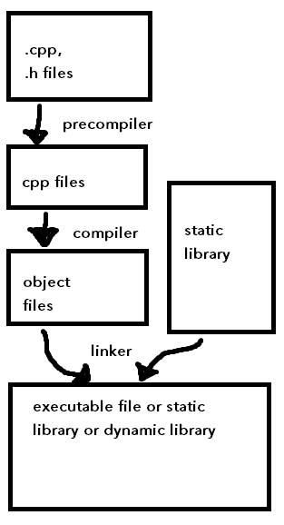
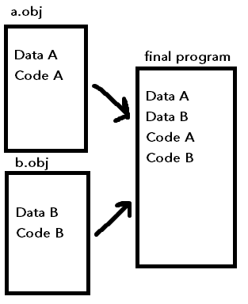

Review from previous lecture - function calling another function
Foo:
addi $sp, $sp, -8
sw $s0, 0($sp)
sw $ra, 4($sp)
jal Bar
lw $ra, 4($sp)
lw $s0, 0($sp)
addi $sp, $sp, 8
jr $ra
Building programs from program code
To build a program is to turn the source code into a final result (like an executable file)
- Building has several steps - see e.g. the dragon book on compiler theory
Compilation steps:
- Precompiler (preprocessor)
- Compiler
- Linker
Project: collection of files that will be turned into a final result (e.g., .cpp, .h files)
To build a multi-file program, we can use a command in the terminal that follows some syntax like this:
# list all cpp files
g++ -std=c++17 main.cpp Greeter.cpp
The precompiler creates "pure c++" code from source code:
- e.g.
#include- precompiler directive, just copies file content into file
Example with other precompiler directives: if the preprocessor hasn't been made aware of "GREET", define it here:
#pragma once
#ifndef GREET
#define GREET
void Greet();
#endif
Diagram: build process

The compiler turns each cpp file into a separate object file.
Object files:
- program code
- data (global and static)
- relocation tables (not exam material)
- list of unresolved symbols/symbol table
For example, main.cpp will be turned into main.obj and b.cpp will be turned into b.obj.
Linker

Symbol table:
- has a list of things that the object file needs annd things that the object file provides to other object files
- includes variables, functions, classes, etc.
Object files contain program code in the CPU instruction format.
Note: want to keep object files around, so that we don't need to recompile the entire program every time. Otherwise, the whole program always needs to be recompiled, even if we only made a minor change.
However, object files are big - usually, we would mark .obj files in the gitignore so we don't end up pushing huge files to version control.
Libraries
The final result of building a program could also be a library.
Two types of libraries:
- Static library
- Dynamic library
Library:
- a built file that is not meant for separate execution
- provides tools, programs, etc. for other programs to execute